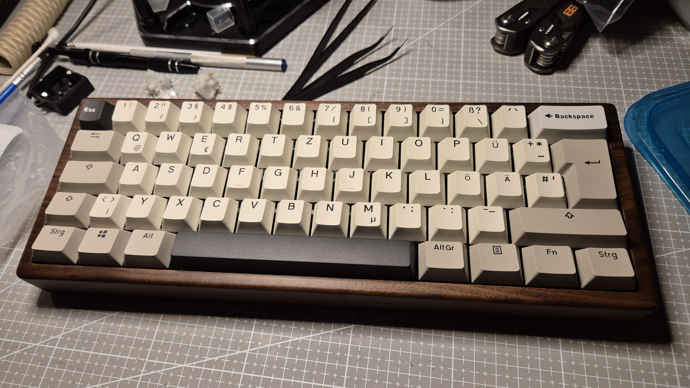

Alte Klassiker retten
Gebrauchte Tastaturen von Ebay und Kleinanzeigen bekommen neue Elektronik statt einen Platz auf dem Müll.
Über uns
Ich bastle, sammle und dokumentiere mechanische Tastaturen – am liebsten solche mit deutschem ISO-Layout, weil die im internationalen Custom-Keyboard-Kosmos meist zu kurz kommen. J-Keebs ist mein Werkstattbuch: was funktioniert, was schiefgeht, und warum.
Angefangen hat alles mit dem Zerlegen und Zusammenbauen fremder Tastaturen für Freunde und Verwandte. Mittlerweile geht es tiefer: Controller-Swaps, eigene QMK-Firmware und die Frage, wie man einen 40 Jahre alten Klassiker wie die Cherry G80-3000 technisch auf ein modernes Niveau hebt, ohne ihren Charme zu verlieren.

Fokus
Gebrauchte Tastaturen von Ebay und Kleinanzeigen bekommen neue Elektronik statt einen Platz auf dem Müll.
Löten, verkabeln, Firmware schreiben – und dabei selbst besser in Elektrotechnik und Programmierung werden.
Auch Sackgassen und Debugging-Marathons gehören dazu – im Blog gibt's den ganzen Weg, nicht nur das fertige Ergebnis.
Vernetzen
Code und Projekte landen auch auf GitHub, den fachlichen Werdegang gibt's auf LinkedIn – beides verlinkt im Footer. Für alles andere hilft die Kontaktseite weiter.